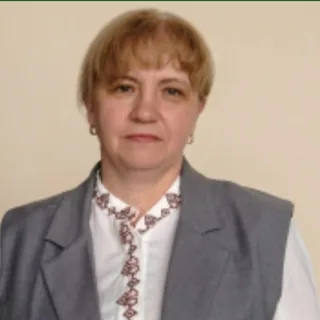
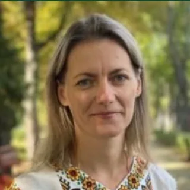
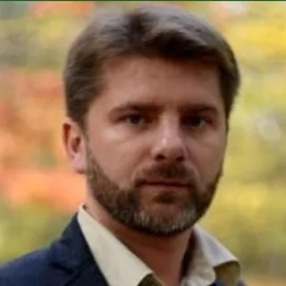

Буценко Людмила Миколаївна
В.о. завідувача кафедри
Доктор біологічних наук, професор
Рослинно-мікробні взаємодії, біоконтроль фітопатогенних бактерій, PGPB-біопрепарати.
Біографія та здобуткиЗнайшли помилку або щось працює не так? Опишіть проблему в короткій формі — так ми швидше її виправимо.
Заповнити формуАбо напишіть нам у групі кафедри:
FacebookКафедра фізіології, біохімії рослин та біоенергетики факультету захисту рослин, біотехнологій та екології НУБіП України: історія, колектив, факультет і освітні програми.
Кафедра фізіології, біохімії рослин та біоенергетики — одна з найстаріших і фундаментальних науково-освітніх ланок НУБіП України.
Кафедра готує здобувачів вищої освіти за ступенями «Бакалавр», «Магістр» і «Доктор філософії (PhD)», поєднуючи класичну школу фізіології та біохімії рослин із сучасними напрямами клітинної біоінженерії, фітовірусології, нанобіотехнологій, біоенергетики та моніторингу біосистем.
Науково-педагогічні працівники викладають фундаментальні та професійно орієнтовані дисципліни українською й англійською мовами для здобувачів денної та заочної форм навчання.
З 1 липня 2026 року обов'язки завідувача кафедри виконує доктор біологічних наук, професор Людмила Миколаївна Буценко.
Становлення кафедри пов'язане із заснуванням у 1898 році кафедри ботаніки Київського політехнічного інституту при сільськогосподарському відділенні. Її засновником і першим завідувачем став професор, академік ВУАН Євген Пилипович Вотчал (1864–1937) — учень К. А. Тімірязєва та основоположник української школи фізіологів рослин, який заклав фундамент польової фізіології, теорії врожайності та посухостійкості сільськогосподарських культур.
Уже в 1902 році при кафедрі було створено навчальну лабораторію фізіології рослин.
Кафедра ботаніки при сільськогосподарському відділенні КПІ (1898) і навчальна лабораторія фізіології рослин (1902). Формування школи польової фізіології, теорії врожайності й посухостійкості рослин.
Реорганізація у кафедру фізіології та мікробіології рослин. Дослідження дихання рослин, мінерального живлення та фізіологічних основ продуктивності польових культур.
Кафедра фізіології і біохімії рослин (1963). Вперше в Україні — електронно-мікроскопічні дослідження хлоропластів с.-г. культур. Перший україномовний підручник «Фізіологія рослин» С. І. Лебедєва (1961). 1967 — навчально-наукова лабораторія фотосинтезу; участь у Міжнародній біологічній програмі.
Водний режим, полуденна депресія фотосинтезу, мінеральне живлення озимої пшениці, картоплі, гречки, кукурудзи й цукрового буряка; механізми морозостійкості рослин.
Водний обмін і фітогормональний статус рослин, стійкість деревних культур за змін клімату, альгологія, біоенергетика, ендогенні регулятори росту.
Нанобіотехнології (фулерени C₆₀ для стресостійкості рослин), фітопатогенна мікробіологія, фітовірусологія, гранти НФДУ, проєкти UFEM і Febris AI, оновлення навчально-методичної бази.
Освіту, стажування та наукові результати кожного викладача зібрано в розділі «Здобутки».

В.о. завідувача кафедри
Доктор біологічних наук, професор
Рослинно-мікробні взаємодії, біоконтроль фітопатогенних бактерій, PGPB-біопрепарати.
Біографія та здобуткиДоцент, заступник голови профбюро факультету
Доктор біологічних наук, доцент
Взаємодія Basidiomycetes з патогенами і вірусами, експрес-діагностика, біопрепарати для АПК.
Біографія та здобуткиДоцент, голова Ради молодих вчених факультету
Кандидат сільськогосподарських наук, доцент
Посухостійкість деревних і с.-г. рослин, білки стресу, PLFA-аналіз мікробіому, екобіотехнології води.
Біографія та здобутки
Доцент
Кандидат біологічних наук, доцент
Біохімія дії важких металів, вуглецеві наноматеріали (фулерен C60) та аквапорини за водного стресу.
Біографія та здобутки
Доцент; завідувач Лабораторії наукових фондових колекцій Інституту зоології ім. І. І. Шмальгаузена НАН України
Кандидат біологічних наук, доцент
Стійкість рослин до ентомофітофагів, біорізноманіття Diptera: Sciaridae, ШІ-моніторинг (Febris), ДНК-баркодинг.
Біографія та здобуткиДоцент, заступник декана факультету з виховної роботи
Кандидат сільськогосподарських наук, доцент
Фітовірусологія, молекулярна та ІФА-діагностика вірусів лікарських і зернових культур, фітоімунітет.
Біографія та здобуткиВід першого україномовного підручника з фізіології рослин до грантів НФДУ та міжнародних проєктів.
В.о. завідувача кафедри · Доктор біологічних наук, професор
Доцент, заступник голови профбюро факультету · Доктор біологічних наук, доцент
Доцент, голова Ради молодих вчених факультету · Кандидат сільськогосподарських наук, доцент
Доцент · Кандидат біологічних наук, доцент
Доцент; завідувач Лабораторії наукових фондових колекцій Інституту зоології ім. І. І. Шмальгаузена НАН України · Кандидат біологічних наук, доцент
Доцент, заступник декана факультету з виховної роботи · Кандидат сільськогосподарських наук, доцент
Проєкт № 2025.07/0110: перша масштабна інвентаризація різноманіття «темних таксонів» комах гірських екосистем Українських Карпат. Українсько-фінський проєкт UFEM та європейська схема моніторингу запилювачів eBMS.
Розробка й валідація цифрової системи Febris із розумними пастками Mosqitter Grand на біостаціонарі «Теремки». 3D-друкований сканувальний мікроскоп від проєкту «Microscopes for Everyone» (2026).
LUOMUS (Гельсінкі), Німецький ентомологічний інститут Зенкенберга SDEI, ТУ Ільменау (фулерени C₆₀), Католицький університет у Ружомбероку, університети Латвії, Польщі, Швеції та Норвегії.
2025 — свідоцтва про авторське право № 135956 і № 135955 на навчальні посібники «Фізіологія рослин. Частина 1» та «Частина 2», впроваджені в навчальний процес.
Навчально-наукова лабораторія «Біохімії та фітобіотехнології»; постійні навчально-консультаційні курси «Фізіологія рослин» (з 2020 р.).
Студенти виконують експериментальні дослідження з фізіології, біохімії рослин і біоенергетики, готують магістерські та конкурсні наукові роботи.
Факультет веде свій початок з 1962 року, коли в Українській сільськогосподарській академії (УСГА) було засновано профільний факультет у складі трьох кафедр.
Сьогодні факультет провадить освітню, науково-дослідну, інноваційну, навчально-виробничу та інформаційно-консультаційну діяльність. Головна мета — підготовка висококваліфікованих фахівців із захисту і карантину рослин, прогресивних біотехнологій, збалансованого природокористування, фітосанітарного та екологічного контролю для екобезпечної роботи в аграрній, промисловій і природоохоронній сферах.
кафедр факультету
студентських наукових гуртків (понад 300 студентів)
аспірантів і докторантів
спеціалізована вчена рада: біотехнологія, екологія, фітопатологія
В УСГА засновано факультет у складі трьох кафедр: загальної ентомології, сільськогосподарської та лісової ентомології, фітопатології.
Створено кафедру технології вирощування та захисту тропічних і субтропічних культур (згодом — кафедра карантину рослин та світових агротехнологій).
Створено кафедру агромікробіології та вірусології.
Рішенням Вченої ради НУБіП України факультети біотехнології, екології та захисту рослин об'єднано в сучасний факультет захисту рослин, біотехнологій та екології.
Факультет видає фаховий науковий вісник «Biological Systems: Theory and Innovation» і співпрацює з BioNorma, Corteva Agriscience, Syngenta AG, Ukravit, «БТУ-Центр», «Сінево», «Оболонь», Arterium, ПрАТ «Дарниця» та Університетом Вагенінгена (Нідерланди).
Декан факультету
Заступник декана з навчальної роботи
Заступник декана з наукової та міжнародної діяльності
Заступник декана з виховної роботи
03041, м. Київ, вул. Героїв Оборони, 13, навч. корпус № 4, кімн. 42 · (044) 527-86-99, 527-85-77 · plantprotect_dean@nubip.edu.ua
Спеціальності факультету та дисципліни, які забезпечує кафедра на кожному рівні вищої освіти.
Кафедра також викладає для спеціальностей 162 «Біотехнології та біоінженерія», 201 «Агрономія», 202 «Захист і карантин рослин», 203 «Садівництво та виноградарство», 205 «Лісове господарство», 206 «Садово-паркове господарство», 181 «Харчові технології», 101 «Екологія», 229 «Громадське здоров'я».
Спеціальність 162 / G21 «Біотехнології та біоінженерія». Дисципліни кафедри: